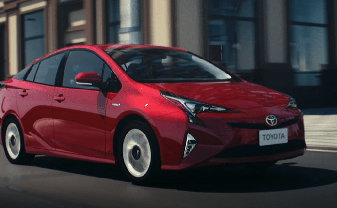

01
操控樂趣
人人滿意的駕駛體驗
透過最佳重量分配，實現平順起步、直線穩定加速，過彎同時保持車身平穩，帶給駕駛更靈敏的道路反饋，享受隨心馳騁的行駛快感

因為我們做了這些革新
低重心設計
透過低重心設計，不僅呈現更低伏的外觀，更能減少車身側傾，保持高速行駛穩定性。
車體剛性強化
車身結構採用超高強度鋼材，提升車輛穩定性，同時藉由雷射強化焊接技術，大幅增加焊點數量，提升車身抗扭剛性，強化駕馭穩定性及安全性。
四輪獨立懸吊
搭載全新四輪獨立懸吊設定，透過懸吊的高乘載強度，保持輪胎抓地力，同時兼顧轉向靈敏度與清晰路感回饋，提升駕馭樂趣。